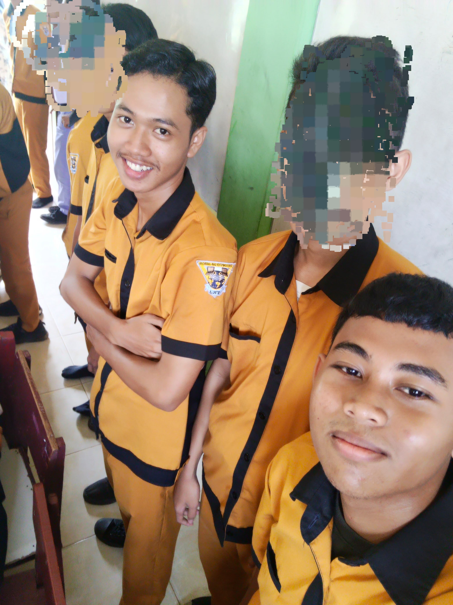
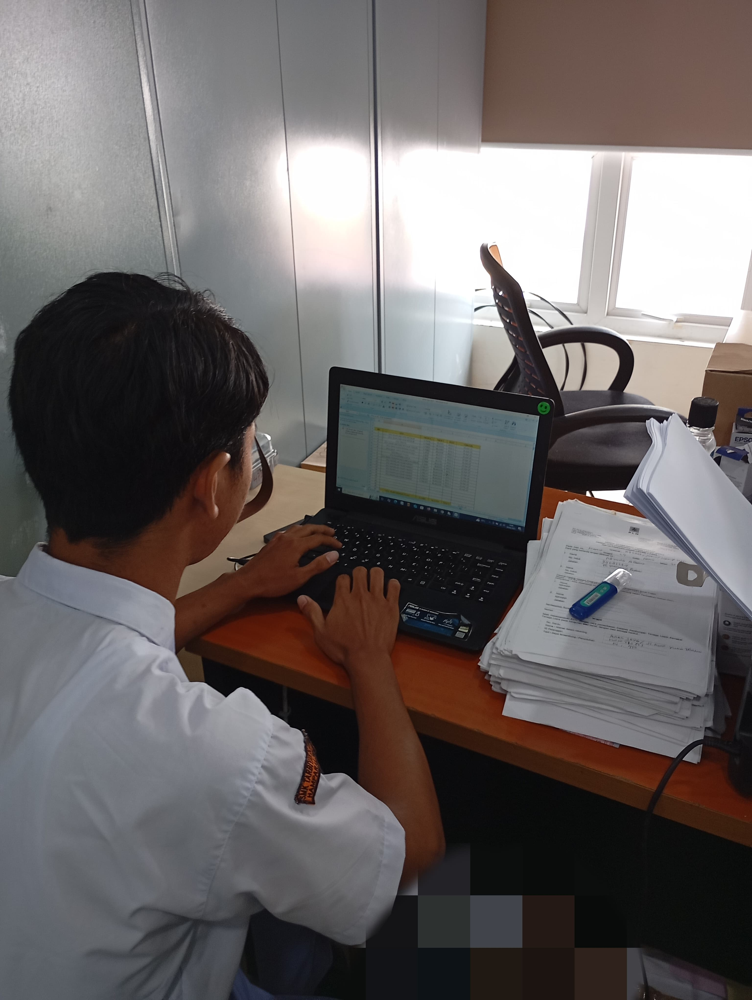
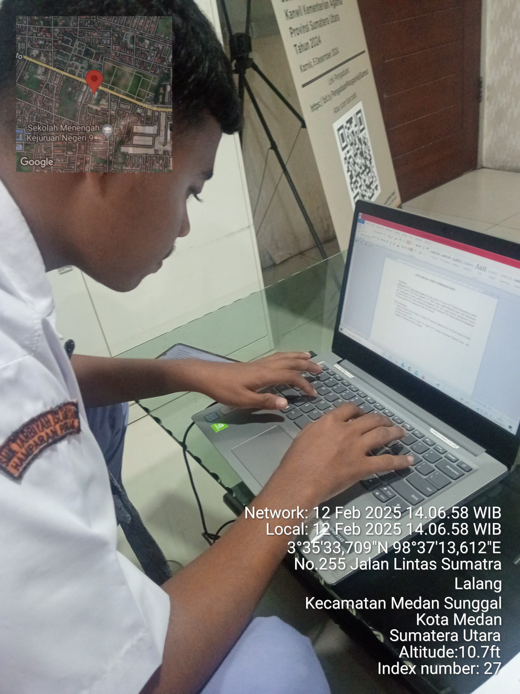
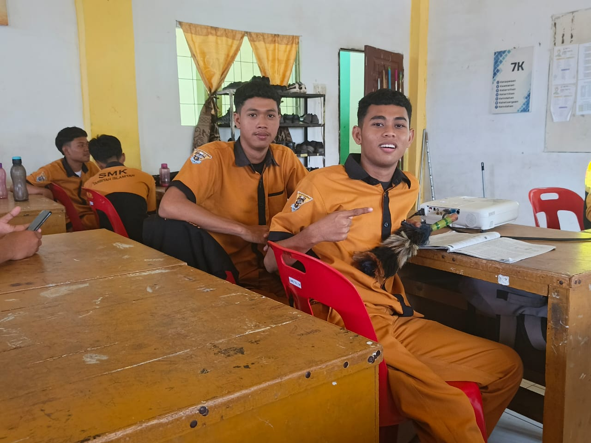

Teman sebangku XII TKJ 1
Bagus Kurniawan dan Bintang Akbar Utama dua orang murid dari XII TKJ 1. Mereka mengenal satu sama lain sejak awal masuk SMK.
Namun pada saat kelas duduk dibangku kelas X mereka tidak langsung duduk sebangku. Pada saat naik ke kelas XI, mereka mulai duduk sebangku.
 Foto di atas, saat mereka di kelas XI
Setelah menyelesaikan PKL di tempat perusahaan masing masing.


foto di atas, Bagus dan Bintang di tempat PKL masing masing
Mereka kembali ke sekolah, dan berencana saat dikelas naik kelas XII mereka akan duduk sebangku lagi.
Tiba di bangku kelas XII mereka berhasil untuk duduk dibangku yang sama lagi.

foto ini ketika Bagus dan Bintang saat kelas XII